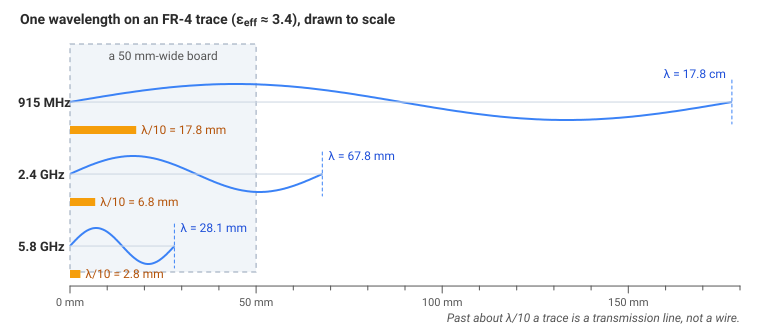
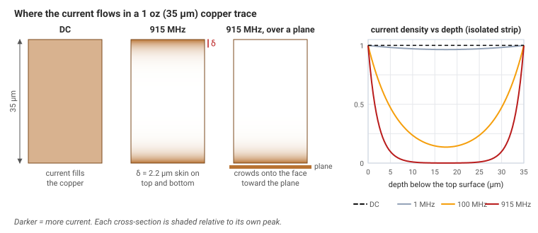
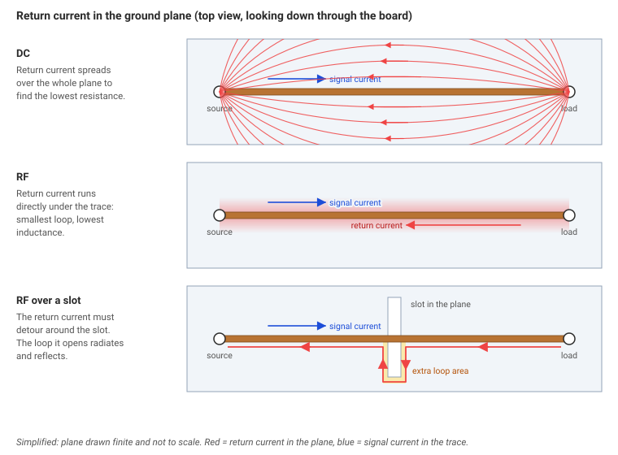
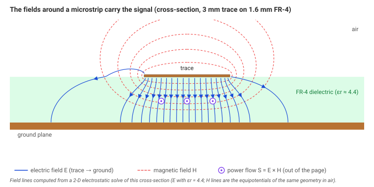

Why RF is different
A first circuits course treats a wire as a perfect connection, ground as 0 V everywhere, and current as something that flows through the copper like water in a pipe. At radio frequency all three of those break. The rest of the RF notes are what you do once they have broken. This module is the reason they break.
What's covered
- When a connection is long compared with a wavelength, and why λ/10 is the usual line between "just a wire" and a transmission line.
- Why RF current crowds into a thin skin at the surface of the copper.
- Why the return current runs under the trace, and what a slot in the ground plane does.
- Why two points on the same ground net are not at the same voltage at RF.
- Why the energy of the signal travels in the fields, mostly in the board, not inside the copper.
Planned walkthrough of this page (≈ 25 min):
- The three ideas that break
- Wavelength, and the wire that is no longer a wire
- Skin effect: why the current leaves the middle
- Return current and the slot you must not cut
- A via that is not a short
- Energy in the fields
When a wire stops being a wire
A change of voltage does not reach the far end of a wire instantly. It travels as a wave, at a large fraction of the speed of light. For a slow signal the wave arrives long before the signal has had time to change, so the whole wire sits at one voltage and ordinary circuit laws (EE Module 2) are fine. A fast signal can change while the wave is still on the way. Then one end is at one voltage and the other end is at another, at the same instant. The wire has become a transmission line: a path that guides a travelling wave. Module 1 is that theory. What decides "slow" or "fast" is the length of the wire compared with the wavelength.
Wavelength is the distance the wave travels during one cycle:
At 915 MHz, a common telemetry frequency, the wavelength in air is \(3\times10^8 / 915\times10^6 = 32.8\ \text{cm}\). On FR-4 it is \(32.8/\sqrt{3.4} = 17.8\ \text{cm}\).
| Frequency | Where you meet it | λ in air | λ on FR-4 | λ/10 on FR-4 |
|---|---|---|---|---|
| 60 Hz | Wall power | 5 000 km | — | — |
| 915 MHz | Telemetry | 32.8 cm | 17.8 cm | 18 mm |
| 2.4 GHz | Wi-Fi, many radios | 12.5 cm | 6.8 cm | 6.8 mm |
| 5.8 GHz | Some video links | 5.17 cm | 2.81 cm | 2.8 mm |
Air wavelengths use \(c = 3\times10^8\ \text{m/s}\). FR-4 uses \(\varepsilon_\text{eff} = 3.4\). The 915 MHz and 2.4 GHz columns are rounded (17.78 cm, 6.78 cm).

One wavelength on an FR-4 trace, to scale. At 915 MHz, λ/10 is 18 mm. At 2.4 GHz it is 6.8 mm, a small fraction of a 50 mm board.
Go deeper: why λ/10?
One wavelength is one full cycle, 360°. Over λ/10 the wave has already moved through 36°, so the two ends of the trace are noticeably out of step. Kirchhoff's laws assume the voltage is the same all along a wire at one instant. That is the lumped model. Past about λ/10 the assumption is too crude, and you need the distributed model, where voltage and current vary along the line (Module 1). λ/10 is not a law. It is a convenient threshold, and some designers use λ/20 when the signal is precious.
Skin effect
At DC, current spreads through the whole thickness of a copper trace. At radio frequency it does not. The reason is inside the metal, not a rule about surfaces.
A changing current produces a changing magnetic field. A changing magnetic field induces an electric field (Faraday's law). That induced field opposes the change that created it (Lenz's law), so it drives a current against the applied current. In the middle of the conductor you are surrounded by changing current, and the opposing field is strong enough to cancel the current there. Near the surface there is less conductor outside you to produce that opposing field, so the current survives. The faster the current changes, the stronger the opposition, and the thinner the layer that is left. That layer is the skin.
This is why RF loss depends on the surface of the copper, its roughness and its plating, and only a little on how thick the copper is, once the copper is already several skins thick.

Where the current flows in 1 oz (35 µm) copper. At DC it fills the trace. At 915 MHz it lives in a skin about 2.2 µm deep. Over a ground plane it also crowds toward the plane.
Skin depth δ is the depth at which the current density has fallen to \(1/e\), about 37 %, of its value at the surface:
At 915 MHz that comes out to 2.2 µm (2.16 µm before rounding). A standard 1 oz trace is 35 µm thick, so nearly all the current is in the outer couple of micrometres, about the size of the bumps on the copper. Rough copper therefore adds loss. Module 3 comes back to that.
| Frequency | Skin depth in copper |
|---|---|
| 60 Hz | 8.4 mm |
| 1 MHz | 65 µm |
| 915 MHz | 2.2 µm |
| 2.4 GHz | 1.3 µm |
Return current takes the path of least inductance
Current flows in a loop: out on the signal trace and back on a return path, usually the ground plane underneath. At DC the return current spreads across the plane, looking for the lowest resistance. At RF it looks for the lowest inductance. Inductance grows with the area of the loop. The smallest loop is the one where the return current runs directly under the trace, a mirror image of the signal.

Return current in the plane under a trace. At DC it spreads. At RF it follows the trace. A slot forces a detour and opens a loop.
Cut a slot in the ground plane under an RF trace, for example to route another signal through, and the return current cannot follow the trace. It detours around the slot. Three things follow from that larger loop:
- The loop radiates. The trace has become an accidental antenna.
- The impedance jumps at the slot, so part of the signal reflects (Module 1).
- Nearby circuits pick up the radiated energy. That is interference (Module 7).
"Ground is not ground"
On a schematic, every ground symbol is the same perfect 0 V. On a board, ground is copper planes tied together by vias, the plated holes between layers, and every piece of copper has a little inductance. An inductor's opposition to a changing current is its reactance:
A 1 nH ground via at 2.4 GHz: \(X_L = 2\pi \times 2.4\times10^9 \times 1\times10^{-9} = 15\ \Omega\). Fifteen ohms is not a short circuit. Two points on the "same" ground can sit at different RF voltages. The plane behaves like a network of small inductors.
N vias in parallel have about \(1/N\) of the inductance of one, so the practical answer is many ground vias, close to every RF part's ground pin. Module 4 is where that stitching is laid out. At 5.8 GHz the same 1 nH via is 36 Ω, even less like a piece of wire.
The energy travels in the fields
The most surprising idea in the module: the signal's energy does not travel inside the copper. It travels in the electric field, between conductors at different voltages, and the magnetic field, around conductors carrying current, in the space around and between them. The copper only guides the wave, the way rails guide a train. On a PCB most of those fields sit in the board material between the trace and the ground plane.

Fields around a trace over a ground plane. E runs from the trace to the plane, mostly through the board. H circles the trace. The power flows along the trace, in the space between the conductors.
Go deeper: the Poynting vector
The direction and the amount of power flowing through space is \(\vec S = \vec E \times \vec H\), in watts per square metre. For a trace over a ground plane, \(\vec S\) points along the trace and is concentrated in the dielectric just under it. That is why a material's dielectric constant and loss tangent show up in every RF calculation, even in calculations that look like they are only about the copper.
The RF designer's mental model
- Think in waves, not only in currents. Ask where the wave goes, and what it runs into.
- Every discontinuity reflects. A bend, a via, a pad or a connector changes what the wave sees, and part of the wave bounces back (Module 1).
- Anything near a quarter wavelength can radiate if you leave it as a loop or a stub. It receives just as well.
- The three enemies are reflections, loss and interference. The rest of these notes is how to keep them small.
Check your understanding
Three kinds of question: explain the mechanism, find the flaw in a plausible claim, and say what assumption broke. They stay closed until you want them.
Explain it from the mechanism
Check your understandingWhy λ/10 is the threshold
Why does a trace longer than about λ/10 stop being "just a wire"?
- The copper's resistance becomes larger than 50 Ω.The DC resistance of a short trace is milliohms. The failure is that the two ends are no longer at the same voltage at one instant.
- One wavelength is 360° of phase. λ/10 is 36° of lag, so the far end is already a tenth of a cycle behind the near end. Kirchhoff's laws assumed that lag was zero.The lumped model is the assumption that broke. The distributed model is what replaces it.
- λ/10 is the length at which the trace becomes an antenna and radiates all the power.Radiation becomes serious nearer λ/4, and only if the trace is not a proper line. λ/10 is where the voltage is already uneven, which is earlier.
- It is a manufacturing limit: fabs cannot control impedance on shorter traces.The threshold comes from the phase along the trace, not from a fabrication rule. Some designers use λ/20 for the same physical reason, with a smaller lag.
A wave advances 360° in one wavelength. In a tenth of that distance it advances 36°. The voltage at the load end is not the voltage at the source end. Every lumped calculation (a single current, a single voltage drop) assumed they were. Past that point you treat the connection as a transmission line.
Check your understandingWhy the current leaves the middle of the wire
At 915 MHz the current in a copper trace occupies about 2 µm at the surface, not the whole 35 µm. What pushes it out there?
- The electrons repel each other more at high frequency, so they move apart to the surface.Electron repulsion is there at DC too, and at DC the current fills the copper. The new ingredient is a changing magnetic field.
- The surface is a better conductor than the bulk.The copper is the same material all the way through. What changes is the induced electric field, which is stronger in the interior.
- The changing current makes a changing magnetic field, which induces an electric field opposing that current. The opposition is strongest in the interior, where the conductor is surrounded by changing current, so the net current is left at the surface.Faraday plus Lenz. Higher frequency, faster change, thinner skin, as 1/√f.
- The ground plane attracts the current to the bottom face, and that is the whole of the skin effect.A ground plane does pull current toward the near face. The skin effect happens in an isolated wire too, with no plane at all. The plane is an extra preference, not the cause.
Start from the fields. Changing I makes changing B. Changing B makes an E that opposes the change. Inside the metal that E cancels the applied field; at the surface it does not fully, because there is less metal outside. The remaining layer's thickness is the skin depth, \(\delta = \sqrt{2\rho/(\omega\mu)}\), 2.2 µm in copper at 915 MHz.
Find the flaw
Check your understanding"25 mm is short, so it is just a wire"
A 915 MHz trace on FR-4 (\(\varepsilon_\text{eff} = 3.4\)) runs 25 mm from the radio to the connector. A teammate says 25 mm is obviously short, so it can stay an ordinary trace with no impedance control.
What was missed?
- 25 mm is several wavelengths, so the trace is an antenna.The wavelength on the board is 17.8 cm. 25 mm is 0.14 of that, not several. 0.14 is already past λ/10.
- "Short" means short beside the wavelength, not beside a finger. 25 mm is 25/178 ≈ 0.14 λ, about 51°, and λ/10 is 36°. The ends are not at the same voltage.λ/10 at 915 MHz on FR-4 is 18 mm. 25 mm is past it.
- FR-4 is slower than air, so 25 mm is electrically shorter than it looks and the trace is fine.Slower means a shorter wavelength, so the same millimetres are a larger fraction of a cycle. The dielectric makes the trace electrically longer.
- Impedance control only matters above 2.4 GHz.The test is ℓ/λ at the frequency you are using. At 915 MHz, λ/10 is already 18 mm.
λ on the board is 17.8 cm, so λ/10 is 18 mm and 25 mm is 0.14 λ, about 51°. The trace is a transmission line. The word "short" was a comparison with a hand, and the wave does not care about hands.
Check your understanding"2 oz copper will halve the RF loss"
At 2.4 GHz the skin depth in copper is 1.3 µm. A teammate wants to move an RF trace from 1 oz (35 µm) to 2 oz (70 µm) to cut its loss in half.
Why does that not work?
- Heavier copper raises the dielectric loss.Dielectric loss is the board, not the copper weight. The claim was about conductor loss, and that is the part which fails to improve.
- 2 oz copper has twice the resistance, because the current has further to spread.At DC, thicker copper has less resistance, not more. At RF the current never reaches the extra copper.
- The current already occupies only about a micrometre at each surface. Copper beyond a few skin depths carries essentially nothing, so doubling the thickness doubles the DC copper and leaves the RF resistance almost unchanged.Once the trace is many δ thick, the RF resistance per square is about ρ/δ, which does not contain the thickness.
- It does work: loss is proportional to thickness, so twice the copper is half the loss.That is the DC story. It stops being true when δ is much smaller than the thickness, which at 2.4 GHz it is (1.3 µm against 35 µm).
At 2.4 GHz, δ = 1.3 µm. Both 35 µm and 70 µm are many skin depths, so both present about the same RF resistance, set by ρ/δ. Thicker copper lowers the DC resistance only. Less RF loss comes from a smoother surface and a lower-loss finish, because the current lives in the outer micrometre. Try the two weights in the figure above: the RF/DC ratio gets worse as the copper gets thicker, which is the extra unused copper, not a better RF path.
What assumption broke?
Check your understandingA slot that is fine at 1 kHz
A ground plane has a slot under a trace so that another signal can cross. At 1 kHz nobody notices. At 2.4 GHz the trace radiates and the signal reflects.
Which assumption, true at 1 kHz, failed at 2.4 GHz?
- The slot is an open circuit at low frequency and a short at high frequency.The slot is a gap in the return path at every frequency. What changes is which path the return current chooses.
- At low frequency the return current spreads out to find the lowest resistance, and a detour around a slot costs almost nothing. At RF it must hug the trace to keep the loop small, and the slot forces a large loop.Inductance, not resistance, is what the RF return current is minimising. The loop area is the inductance.
- Copper stops conducting at 2.4 GHz, so the current has to jump the slot through the air.The copper still conducts. The current goes around the slot, in the plane, and that long path is the loop that radiates.
- The trace's resistance crossed 50 Ω between 1 kHz and 2.4 GHz.The symptom is radiation and reflection from a larger loop, not the trace resistance reaching 50 Ω.
The assumption was "return current may wander". That is harmless when the current is steady, because a wider path in the plane is only a tiny extra resistance. A changing current pays for loop area as inductance, \(X_L = 2\pi f L\), and at 2.4 GHz that bill is large. The slot makes the area large. The fix is to keep the plane continuous under the trace, and cross the other signal somewhere else.
Check your understanding"Ground is 0 V, so a via is a short"
A schematic shows two ground pins tied by a via and a bit of plane. Someone treats that via as 0 Ω at 2.4 GHz because both ends are the ground symbol.
What broke?
- The via is open at RF because of the skin effect.Skin effect raises the resistance of the via a little. The dominant term is the inductance, about 1 nH, and 2πfL at 2.4 GHz is 15 Ω.
- Ground symbols are only valid below 1 MHz, so the net should be renamed.The net is still the return path. What failed is the idea that every point on it is at the same voltage once the current is changing quickly.
- A ground symbol means 0 V only if nothing inductive sits between the two points. A 1 nH via has \(X_L = 2\pi f L \approx 15\ \Omega\) at 2.4 GHz, so the two "grounds" differ by I times that.The schematic hid the inductance. The frequency made it matter.
- The via is 15 Ω of ordinary resistance, measurable with an ohmmeter.An ohmmeter sees the DC resistance, milliohms. The 15 Ω is reactance. It is there only while the current is changing at 2.4 GHz.
The assumption was "one ground symbol, one voltage". The via is an inductor. At 2.4 GHz, 1 nH is \(2\pi\times2.4\times10^9\times10^{-9} = 15\ \Omega\), which is a real voltage drop \(I X_L\) between two points the schematic drew as the same node. Several vias in parallel bring that down roughly as 1/N. At 5.8 GHz the same via is 36 Ω.
At the bench
Planned lab (≈ 15 min, a board and a ruler, no VNA yet):
- Mark λ and λ/10 on a spare board at the radio's frequency
- Find one trace that is already a transmission line, and one that is not
- Find a ground-plane gap under a trace, if the board has one
Is this trace a wire?
- Write your prediction first. At the radio's frequency, on FR-4, how long is λ/10? Which traces on the board do you expect to be longer than that?
- Compute λ/10 from \(c/(f\sqrt{3.4})/10\) and mark that length on a slip of paper.
- Compare. Lay the slip on the RF trace from the radio to the antenna connector. If the trace is longer than the slip, it is a transmission line and Module 1 applies. If it is shorter, say so, and say how much margin you have.
- Write your prediction first. If the ground plane under that trace is cut, what do you expect the return current to do at this frequency, and what would you expect at 1 kHz?
- Look at the plane under the trace. A slot, a split, or a row of holes is a detour for the return current.
Summary & cheat sheet
- Compare every length with the wavelength. Past about λ/10, a trace is a transmission line. λ/10 is 36° of lag.
- On FR-4 the wave runs at about half the speed of light, so the wavelength is about half what it is in air. At 915 MHz, λ is 17.8 cm and λ/10 is 18 mm.
- RF current flows in a skin at the surface, because a changing B induces an opposing E inside the copper. At 915 MHz the skin is about 2 µm. Thicker copper does not fix that.
- Return current runs under the trace. A slot forces a loop, which radiates and reflects.
- Ground has impedance at RF. A 1 nH via is 15 Ω at 2.4 GHz. Use many vias.
- The energy travels in the fields, mostly in the board under the trace. The copper only guides it.
line if ℓ > λ/10 · 36° of lag
λ/10 ≈ 18 mm · ε_eff ≈ 3.4
copper, 915 MHz: 2.2 µm · ∝ 1/√f
1 nH at 2.4 GHz ≈ 15 Ω
Where this continues
Module 1 builds transmission lines, reflections and loss on top of this. Module 4 is where the vias and the stackup get drawn.
Further reading
- Microwave Engineering (Pozar), chapter 1: electromagnetic theory, including plane waves, the skin effect, and power flow in the fields.